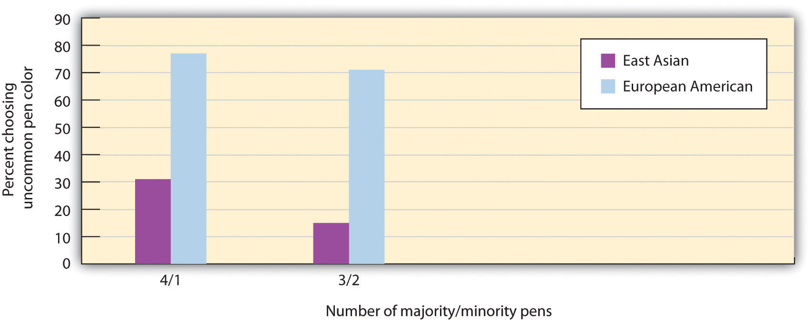

To this point, we have argued that human beings have complex and well-developed self-concepts and that they generally attempt to come to view themselves as positively as they can. In this section, we will consider in more detail the social aspects of the self by considering the many ways that the social situation determines our self-concept. Our selves are not created in isolation; we are not born with perceptions of ourselves as shy, interested in jazz, or charitable to others. Rather, these beliefs are determined by our observations of and interactions with others. Are you rich or poor? Beautiful or ugly? Smart or not? Good or poor at video games? And how do you know? These questions can be answered only by comparing ourselves with those around us. The self has meaning only within the social context, and it is not wrong to say that the social situation defines our self-concept and our self-esteem. We rely on others to provide a “social reality”—to help us determine what to think, feel, and do (Hardin & Higgins, 1996).Hardin, C., & Higgins, T. (1996). Shared reality: How social verification makes the subjective objective. In R. M. Sorrentino & E. T. Higgins (Eds.), Handbook of motivation and cognition: Foundations of social behavior (Vol. 3, pp. 28–84). New York, NY: Guilford Press.
The self-concept and self-esteem are determined in large part through the process of social comparison (Buunk & Gibbons, 2007; Van Lange, 2008).Buunk, A. P., & Gibbons, F. X. (2007). Social comparison: The end of a theory and the emergence of a field. Organizational Behavior and Human Decision Processes, 102(1), 3–21; Van Lange, P. A. M. (2008). Social comparison is basic to social psychology. American Journal of Psychology, 121(1), 169–172. Social comparisonThe process of learning about our abilities and skills, about the appropriateness and validity of our opinions, and about our relative social status by comparing our own attitudes, beliefs, and behaviors with those of others. occurs when we learn about our abilities and skills, about the appropriateness and validity of our opinions, and about our relative social status by comparing our own attitudes, beliefs, and behaviors with those of others. These comparisons can be with people that we know and interact with, with those that we read about or see on TV, or with anyone else that we view as important.
Social comparison occurs primarily on dimensions upon which there is no objectively correct answer and thus on which we can rely only on the beliefs of others for information. Answers to questions such as “What should I wear to the formal?” or “What kind of music should I have at my wedding?” are frequently determined at least in part by using the behavior of others as a basis of comparison. We also use social comparison to help us determine our skills or abilities—how good we are at performing a task or doing a job, for example. When a student looks at another student’s paper to see what grade he or she got, or when we join a tennis club to compare our performance and progress with those of others, we are using social comparison to evaluate our abilities.
Affiliation and Social Comparison
The extent to which individuals use social comparison to determine their evaluations of events was demonstrated in a set of classic research studies conducted by Stanley Schachter (1959).Schachter, S. (1959). The psychology of affiliation. Stanford, CA: Stanford University Press. Schachter’s experiments tested the hypothesis that people who were feeling anxious would prefer to affiliate with others rather than be alone because having others around would reduce their anxiety. Female college students at the University of Minnesota volunteered to participate in one of his experiments for extra credit in their introductory psychology class. They arrived at the experimental room to find a scientist dressed in a white lab coat, standing in front of a large array of electrical machinery. The scientist introduced himself as Dr. Zilstein of the Department of Neurology and Psychiatry, and he told the women that they would be serving as participants in an experiment concerning the effects of electrical shock. Dr. Zilstein stressed how important it was to learn about the effects of shocks, since electroshock therapy was being used more and more commonly and because the number of accidents due to electricity was also increasing!
At this point, the experimental manipulation occurred. One half of the participants (those in the high-anxiety condition) were told that the shocks would be “painful” and “intense,” although they were assured that they could do no permanent damage. The other half of the participants (those in the low-anxiety condition) were also told that they would be receiving shocks but that they would in no way be painful—rather, the shocks were said to be mild and to resemble a “tickle” or a “tingle.” Of course, the respondents were randomly assigned to conditions to assure that the women in the two conditions were, on average, equivalent except for the experimental manipulation.
Each of the women was then told that before the experiment could continue, the experimenter would have to prepare the equipment and that they would have to wait for a while until he was finished. He asked them if they would prefer to wait alone or to wait with others. The outcome of Schachter’s research was clear—while only 33% of the women who were expecting mild shocks preferred to wait with others, 63% of the women expecting to get painful shocks wanted to wait with others. This was a statistically significant difference, and Schachter concluded that the women chose to affiliate with each other in order to reduce their anxiety about the upcoming shocks.
In further studies, Schachter found that the research participants who were under stress did not want to wait with just any other people. They preferred to wait with other people who were expecting to undergo the same severe shocks that they were rather than with people who were supposedly just waiting to see their professor. Schachter concluded that this was not just because being around other people might reduce our anxiety but because we also use others who are in the same situation as we are to help us determine how to feel about things. As Schachter (1959) put it, “Misery doesn’t just love any kind of company, it loves only miserable company” (p. 24). In this case, the participants were expecting to determine from the other participants how afraid they should be of the upcoming shocks.
In short, and as predicted by the idea of social comparison, the women in Schachter’s studies relied on each other to help them understand what was happening to them and to find out how they should feel and respond to their social situations. Again, the power of the social situation—in this case, in determining our beliefs and attitudes—is apparent.
Although Schachter’s studies were conducted in relatively artificial lab settings, similar effects have been found in field studies in more naturally occurring settings. For instance, Kulik, Mahler, and Moore (1996)Kulik, J. A., Mahler, H. I. M., & Moore, P. J. (1996). Social comparison and affiliation under threat: Effects on recovery from major surgery. Journal of Personality and Social Psychology, 71(5), 967–979. found that hospital patients who were awaiting surgery preferred to talk to other individuals who were expecting to have similar procedures rather than to patients who were having different procedures, so that they could share information about what they might expect to experience. Furthermore, Kulik and his colleagues found that sharing information was helpful—people who were able to share more information had shorter hospital stays.
Although we use social comparison in part to develop our self-concept—that is, to form accurate conclusions about our attitudes, abilities, and opinions—social comparison has perhaps an even bigger impact on our self-esteem. When we are able to compare ourselves favorably with others, we feel good about ourselves, but when the outcome of comparison suggests that others are better or better off than we are, then our self-esteem is likely to suffer. This is why good students who attend high schools in which the other students are only average may suddenly find their self-esteem threatened when they move on to more selective colleges in which they are no longer better than the other students (Marsh, Kong, & Hau, 2000).Marsh, H. W., Kong, C.-K., & Hau, K-T. (2000). Longitudinal multilevel models of the big-fish-little-pond effect on academic self-concept: Counterbalancing contrast and reflected-glory effects in Hong Kong schools. Journal of Personality and Social Psychology, 78, 337–349. I’m sure you’ve had the experience yourself of the changes in self-esteem that occur when you have moved into a new grade in school, got a new job, or changed your circle of friends. In these cases, you may have felt much better about yourself or much worse, depending on the nature of the change. You can see that in these cases the actual characteristics of the individual person has not changed at all; only the social situation and the comparison others have changed. And yet the social situation can make a big difference in one’s self-esteem.
Because we naturally want to have positive self-esteem, we frequently attempt to compare ourselves positively with others. Downward social comparisonSocial comparison with those we perceive as worse off than we are. occurs when we attempt to create a positive image of ourselves through favorable comparisons with others who are worse off than we are. Morse and Gergen (1970)Morse, S., & Gergen, K. (1970). Social comparison, self-consistency, and the concept of self. Journal of Personality and Social Psychology, 16(1), 148–156. had students apply for a job, and they also presented the students with another individual who was supposedly applying for the same job. When the other candidate was made to appear to be less qualified for the job than they were, the downward comparison with the less qualified applicant made the students feel better about their own qualifications. As a result, the students reported higher self-esteem than they did when the other applicant was seen as a highly competent job candidate. Research has also found that people who are suffering from serious diseases prefer to compare their condition with other individuals whose current condition and likely prognosis is worse than their own (Buunk, Gibbons, & Visser, 2002).Buunk, A. P., Gibbons, F. X., & Visser, A. (2002). The relevance of social comparison processes for prevention and health care. Patient Education and Counseling, 47, 1–3. These comparisons make them feel better about their own possible outcomes.
Although downward comparison provides us with positive feelings, upward social comparisonSocial comparison with those we perceive as better off than we are., which occurs when we compare ourselves with others who are better off than we are, is also possible (Blanton, Buunk, Gibbons, & Kuyper, 1999; Vrugt & Koenis, 2002).Blanton, H., Buunk, B. P., Gibbons, F. X., & Kuyper, H. (1999). When better-than-others compare upward: Choice of comparison and comparative evaluation as independent predictors of academic performance. Journal of Personality and Social Psychology, 76(3), 420–430; Vrugt, A., & Koenis, S. (2002). Perceived self-efficacy, personal goals, social comparison, and scientific productivity. Applied Psychology: An International Review, 51(4), 593–607. Although upward comparison may lower our self-esteem by reminding us that we are not as well off as others, it is useful because it can provide information that can help us do better, help us imagine ourselves as part of the group of successful people that we want to be like (Collins, 2000),Collins, R. L. (2000). Among the better ones: Upward assimilation in social comparison. In J. Suls & L. Wheeler (Eds.), Handbook of social comparison (pp. 159–172). New York, NY: Kulwer Academic/Plenum. and give us hope (Snyder, Cheavens, & Sympson, 1997).Snyder, C., Cheavens, J., & Sympson, S. (1997). Hope: An individual motive for social commerce. Group Dynamics: Theory, Research, and Practice, 1, 107–118.
The outcomes of upward and downward social comparisons can have a substantial impact on our feelings, on our attempts to do better, and even on whether or not we want to continue performing an activity. When we compare positively with others and we feel that we are meeting our goals and living up to the expectations set by ourselves and others, we feel good about ourselves, enjoy the activity, and work harder at it. When we compare negatively with others, however, we are more likely to feel poorly about ourselves and enjoy the activity less, and we may even stop performing it entirely. When social comparisons come up poorly for us, we experience depression or anxiety, and these discrepancies are important determinants of our self-esteem (Higgins, Loeb, & Moretti, 1995; Strauman & Higgins, 1988).Higgins, E. T., Loeb, I., & Moretti, M. (Eds.). (1995). Self-discrepancies and developmental shifts in vulnerability: Life transitions in the regulatory significance of others. Rochester, NY: University of Rochester Press; Strauman, T. J., & Higgins, E. T. (1988). Self-discrepancies as predictors of vulnerability to distinct syndromes of chronic emotional distress. Journal of Personality, 56(4), 685–707.
Still another way that we use other people to create positive self-esteem is through our group memberships. We use the social situation to gain self-esteem by perceiving ourselves as members of important and valued groups that make us feel good about ourselves. Social identityThe positive emotions that we experience as a member of an important social group. refers to the positive emotions that we experience as a member of an important social group (Hogg, 2003; Oakes, Haslam, & Turner, 1994; Tajfel, 1981).Hogg, M. A. (2003). Social identity. In M. R. Leary, J. P. Tangney, M. R. E. Leary, & J. P. E. Tangney (Eds.), Handbook of self and identity (pp. 462–479). New York, NY: Guilford Press; Oakes, P. J., Haslam, S. A., & Turner, J. C. (1994). Sterotyping and social reality. Oxford, England: Blackwell; Tajfel, H. (1981). Human groups and social categories: Studies in social psychology. Cambridge, England: Cambridge University Press.
Normally, our group memberships result in positive feelings, which occur because we perceive our own groups and thus ourselves in a positive light. If you are a “Midwesterner at heart,” or if you live in the “best fraternity house on campus,” your membership in the group becomes part of what you are, and the membership makes you feel good about yourself. The list that follows presents a measure of the strength of social identity with a group of university students, which might give you a good idea of the variable. If you complete the measure for your own university or college, I would imagine that you would agree mostly with the statements that indicate that you do identify with the group.
This 10-item scale is used to measure identification with students at the University of Maryland, but it could be modified to assess identification with any group. The items marked with an “R” are reversed (such that low numbers become high numbers and vice versa) before the average of the scale is computed. The scale was originally reported by Luhtanen and Crocker (1992).Luhtanen, R., & Crocker, J. (1992). A collective self-esteem scale: Self-evaluation of one’s social identity. Personality and Social Psychology Bulletin, 18, 302–318.
For each of the following items, please indicate your response on a scale from 1 (strongly disagree) to 7 (strongly agree) by writing a number in the blank next to the question.
Kay Deaux and her colleagues (Deaux, Reid, Mizrahi, & Ethier, 1995)Deaux, K., Reid, A., Mizrahi, K., & Ethier, K. A. (1995). Parameters of social identity. Journal of Personality and Social Psychology, 68(2), 280–291. asked college students to list the groups that they identified with. As you can see in Table 4.1 "Varieties of Social Identities", the students reported belonging to a wide variety of groups and claimed that many of these groups provided them with social identities. The categories that they listed included ethnic and religious groups (e.g., Asian, Jewish), political affiliations (conservative, Democratic), occupations and hobbies (gardener, tennis player), personal relationships (husband, girlfriend), and stigmatized groups (gay, homeless). You can see that these identities were likely to provide a lot of positive feelings for the individuals.
Table 4.1 Varieties of Social Identities
| Relationships | Vocation/avocation | Political affiliation | Stigma | Ethnicity/religion |
|---|---|---|---|---|
| Widow | Intellectual | Feminist | Welfare recipient | Jewish |
| Divorced person | Bookworm | Political independent | Unemployed person | Christian |
| Woman | Military veteran | Democrat | Homeless person | Catholic |
| Man | Student | Republican | Retired person | Southerner |
| Lover | Collector | Old person | New Yorker | |
| Friend | Musician | Fat person | American | |
| Girlfriend | Gardener | Deaf person | Hispanic | |
| Boyfriend | Teacher | Person with AIDS | Asian-American | |
| Homemaker | Supervisor | Lesbian | African-American | |
| Head of household | Secretary | Gay | ||
| Teenager | Scientist | Smoker | ||
| Child | Psychologist | Alcoholic | ||
| Wife | Salesperson | |||
| Husband | Business person | |||
| Son | Athlete | |||
| Daughter | ||||
| Sister | ||||
| Brother | ||||
| Grandmother | ||||
| Grandfather | ||||
| Uncle | ||||
| Aunt | ||||
| Mother Father | ||||
| This table represents some of the many social identities reported by a sample of college students. Data are from Deaux et al. (1995).Deaux, K., Reid, A., Mizrahi, K., & Ethier, K. A. (1995). Parameters of social identity. Journal of Personality and Social Psychology, 68(2), 280–291. | ||||
Which of our many category identities is most accessible for us will vary from day to day as a function of the particular situation we are in. Seeing a U.S. flag outside a post office may remind of us our national identity, whereas walking across campus and seeing the football stadium may remind us of our identification with our college. Identity can also be heightened when our identity is threatened by conflict with another group—such as during an important sports game with another university. Each individual has multiple potential social identities, including school and religious memberships, preferred sports and hobbies, and many other social groups, each of which is a potential source of social identity. As a result, which of the many group memberships a person emphasizes at a given time will depend on the situation as well as the person’s goals in that situation.
Social identity refers to the positive emotions we experience as a member of an important social group.
Image courtesy of Foxhunt king, http://commons.wikimedia.org/wiki/File:DSCN0602.JPG.
Robert Cialdini and his colleagues (Cialdini et al., 1976)Cialdini, R. B., Borden, R. J., Thorne, A., Walker, M. R., Freeman, S., & Sloan, L. R. (1976). Basking in reflected glory: Three (football) field studies. Journal of Personality and Social Psychology, 34, 366–374. studied the idea that we can sometimes enhance our self-esteem by “basking in the reflected glory” of our ingroups or of other people that we know. They called this basking process BIRGingThe process of improving our self-esteem by “basking in the reflected glory” of other people and groups.. To test this idea, they observed the clothes and clothing accessories that students at different U.S. universities wore to classes on Mondays. They found that when the university’s football team had won its game on Saturday, students were likely to emphasize their university memberships by wearing clothing, such as sweatshirts and hats, with the symbols of their university on them. However, they were significantly less likely to wear university clothing on the Mondays that followed a football loss. Furthermore, in a study in which students from a university were asked to describe a victory by their university team, they frequently used the term “we,” whereas when asked to describe a game in which their school lost, they used the term “we” significantly less frequently. Emphasizing that “we’re a good school” and “we beat them” evidently provided a social identity for these students, allowing them to feel good about themselves.
It is not always possible to bask in the glory of others, however, because in some cases the other person’s successes may create a comparison standard that leads to upward comparison and thus more negative emotions. Basking can only occur when the performance is on a dimension that is not relevant to our own self-concept because being outperformed by someone on a task that is personally important leads to upward social comparison, resulting in decreased self-esteem (Tesser, 1988).Tesser, A. (1988). Toward a self-evaluation maintenance model of social behavior. Advances in Experimental Social Psychology, 21, 181–227.
To take an example from my own experience, I have found that although I can bask in my good friend Tom’s accomplishments in his career as a lawyer, it is more difficult for me to bask in my colleague Thane’s success in his career as a social psychologist. When the successes are on a dimension that I don’t care about very much (such as when Tom recently won a prize from the American Bar Association), I’m happy to accept and enjoy the positive news, but it was much harder for me to bask when I found that Thane had won an important social psychology prize that I might have liked to win myself. When we are outperformed by others on a dimension that we care about, we attempt to save our self-esteem, for instance, by downplaying the importance of the task or by attributing the success to the other person’s luck or other external factors (Tesser, 1988).Tesser, A. (1988). Toward a self-evaluation maintenance model of social behavior. Advances in Experimental Social Psychology, 21, 181–227.
Because our culture is a powerful social situation, it naturally has a profound influence on our self-concept, and it influences how we think about and relate to others (Breakwell, 1993).Breakwell, G. M. (1993). Integrating paradigms, methodological implications. In G. M. Breakwell & D. V. Canter (Eds.), Empirical approaches to social representations (pp. 180–201). Oxford, England: Clarendon Press. For instance, East Asian students, who come from a collectivistic culture, are more likely to describe themselves in terms of group identities (“I am a member of a church,” “I am a student at my university”) and to make references to other people (“I try to make other people happy,” “I cook dinner with my sister”) than are European and American students, who come from an individualistic culture (Trafimow, Triandis, & Goto, 1991).Trafimow, D., Triandis, H. C., & Goto, S. G. (1991). Some tests of the distinction between the private self and the collective self. Journal of Personality and Social Psychology, 60(5), 649–655. And Europeans and Americans make more positive statements about themselves (“I am an excellent cook,” “I am intelligent”), whereas East Asians are more likely to make positive statements about others (Markus, Kitayama, & Heiman, 1996; Smith & Bond, 1999).Markus, H. R., Kitayama, S., & Heiman, R. J. (1996). Culture and “basic” psychological principles. In E. T. Higgins & A. W. Kruglanski (Eds.), Social psychology: Handbook of basic principles (pp. 857–913). New York, NY: Guilford Press; Smith, P. B., & Bond, M. H. (1999). Social psychology: Across cultures (2nd ed.). Needham Heights, MA: Allyn & Bacon.
One simple yet powerful demonstration of how the culture influences our self-concept is a study that was conducted by Kim and Markus (1999).Kim, H., & Markus, H. (1999). Deviance or uniqueness, harmony or conformity: A cultural analysis. Journal of Personality and Social Psychology, 77, 785–800. In this study, participants were contacted in the waiting area of the San Francisco airport and asked to fill out a short questionnaire for the researcher. The participants were selected according to their cultural background, such that about one half of them indicated they were European Americans whose parents were born in the United States, whereas the other half indicated they were Asian Americans whose parents were born in China and who spoke Chinese at home. After completing the questionnaires (which were not used in the data analysis except to determine the cultural backgrounds), participants were asked if they would like to take a pen with them as a token of appreciation. The experimenter extended his or her hand, which contained five pens. It was arranged such that the pens offered to the participants were either three or four of one color and either two or one of another color (the ink in the pens was always black). As shown in Figure 4.7 "Cultural Differences in Desire for Uniqueness", and consistent with the hypothesized preference for uniqueness in Western, but not Eastern, cultures, the European Americans preferred to take a pen with the more unusual color, whereas the Asian American participants preferred one with the more common color.
Figure 4.7 Cultural Differences in Desire for Uniqueness
In this study, participants from European American and East Asian cultures were asked to choose a pen as a token of appreciation for completing a questionnaire. It was arranged such that there were either four pens of one color and one of another color or three pens of one color and two of another. European Americans were significantly more likely to choose the more uncommon pen color in both cases. Data are from Kim and Markus (1999, Experiment 3).Kim, H., & Markus, H. (1999). Deviance or uniqueness, harmony or conformity: A cultural analysis. Journal of Personality and Social Psychology, 77, 785–800.
Culture also influences behavior, through its influence on the self-concept. Western individualistic people generally use techniques of self-presentation to stand out and express themselves as better than others, whereas Eastern collectivistic individuals are more likely to gain status and self-esteem by trying to conform to the norms of the group and be good group members (Heine, 2005; Sedikides, Gaertner, & Toguchi, 2003).Heine, S. J. (2005). Where is the evidence for pancultural self-enhancement? A reply to Sedikides, Gaertner, and Toguchi (2003). Journal of Personality and Social Psychology, 89(4), 531–538; Sedikides, C., Gaertner, L., & Toguchi, Y. (2003). Pancultural self-enhancement. Journal of Personality and Social Psychology, 84(1), 60–79. Supporting the idea that people from Eastern cultures are less likely to need to self-enhance, Heine and Lehman (1999)Heine, S. J., & Lehman, D. R. (1999). Culture, self-discrepancies, and self-satisfaction. Personality and Social Psychology Bulletin, 25(8), 915–925. doi: 10.1177/01461672992511001 found that Japanese students were more critical of themselves and thus had larger discrepancies between their ideal selves and actual selves than did Canadian students, and yet at the same time, the Japanese students were less distressed by these discrepancies.